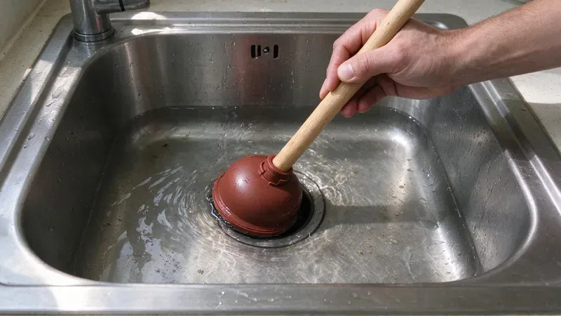

The kitchen drain takes more abuse than any other line in the house. Every day it swallows food scraps and cooking oil, plus coffee grounds and whatever the dishwasher pumps out. Nobody notices until water stands in the basin. Kitchen backups are one of the most common calls we run in North Dakota, and most of them come back to a short list of causes.
What Causes Kitchen Sink Backups
Grease is the main culprit. Bacon fat and pan drippings go down hot and liquid, then cool and harden in the trap and the branch line. That layer grabs food particles and builds into a thick, sticky plug. Where the water is hard, calcium scale and soap residue bond with the grease into a crust that no amount of hot water will dissolve.
Water in North Dakota is often very hard, with high mineral and sulfate content that builds scale in water heaters and fixtures.
Garbage disposals come next. The disposal chops food up, but every bit of it still has to travel down the pipe. Fibrous stuff like celery, corn husks, artichoke leaves and onion skins wraps around the grinding plate and mats up in the drain. Pasta and potato peels turn to paste once they soak. Coffee grounds and eggshell bits do not break down at all, so they drop out in the low spots the way sand does.
Some causes are harder to spot. Old cast iron and galvanized drain lines rust rough on the inside, and every rough patch is a place for grease to grab. A clogged dishwasher drain hose, or one installed without a high loop, can push water back into the sink. A blocked roof vent slows drainage and makes the sink gurgle. If both sides of a double sink back up together, the clog is past the tee where they join.
Quick Fixes You Can Try
Start with the simple stuff before anything stronger. On a slow or standing sink, these steps clear most clogs:
- Check the disposal. Kill the power, then use the 1/4 inch hex key in the bottom of the unit to free a jam and press the red reset button.
- Plunge with the other side sealed. On a double sink, plug the second drain with a stopper or wet rag so the plunger pressure goes at the clog.
- Pull the P-trap. Set a bucket underneath, loosen the two slip nuts and clear the trap by hand.
- Run a hand auger. A small drum auger reaches a few feet into the wall to break up a grease plug.
- Flush with hot water and dish soap once the clog is open, to push loosened grease further down the line.
Skip the chemical drain openers. The lye and acid in those bottles generate real heat, enough to soften PVC and damage disposal seals. They also make the drain dangerous for whoever opens it next. If plunging and pulling the trap do not work, the clog is likely in the branch line inside the wall. That takes a longer cable.
How to Prevent the Next Backup
Prevention is about what goes down the drain. Pour cooled grease into a can and toss it out with the garbage. Wipe greasy pans with a paper towel before they go in the sink. Scrape plates into the trash or compost and use the disposal only for small, soft scraps with cold water running. Cold water keeps fat solid so the disposal can chop it and push it along.
Once a month, fill the sink with hot water and pull the stopper. A full basin dropping all at once pushes harder than a running tap and scours the trap. A water softener helps too, since less scale means smoother drain walls. Houses with repeat backups usually do better on a professional cleaning every year or two, especially when the kitchen line is long or runs into an old cast iron stack.
When to Call a Professional
Some signs mean the problem is deeper than the trap. The sink backs up again within days, water comes up in another fixture, or the dishwasher gurgles. Those point to a branch or main line problem. HPN Plumbing clears kitchen lines with professional cable machines and hydro jetting, and we can put a camera down the line so you see what is actually in there. Call (701) 403-1348 and we will get the sink draining. Expect about $150 to $350 for a standard kitchen line, more if heavy grease calls for jetting.
Need a licensed plumber in North Dakota?
HPN Plumbing answers 24/7 and offers same-day service across North Dakota.